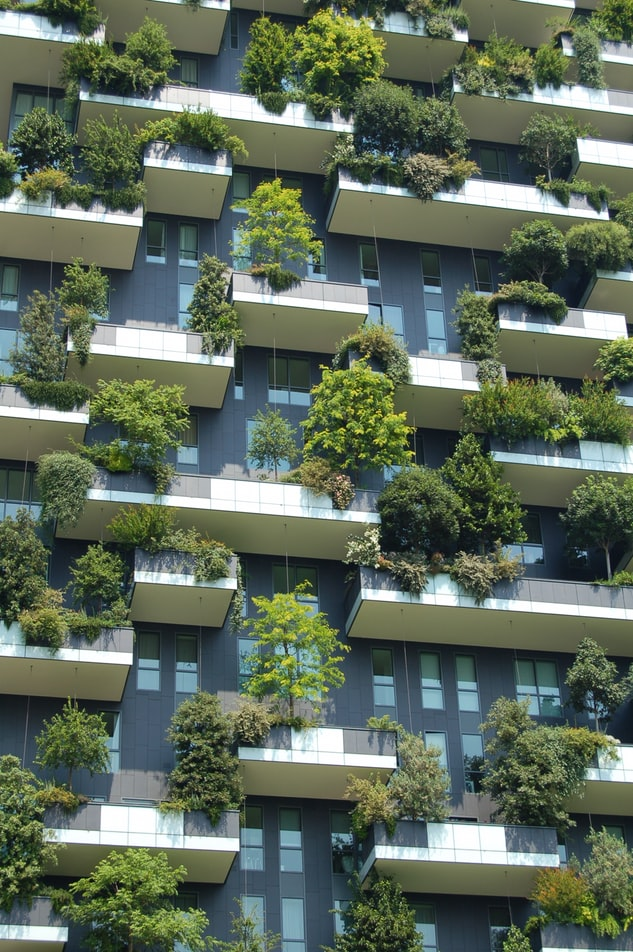

Eco-Friendly or Non-Toxic Products?
Eco-friendly products are those that have been designed to have little or no damaging effect on the environment, or more succinctly, are earth-friendly. It is a phrase that is often used in the marketing of products. However, the terms ‘eco-friendly products’, ‘green products’, or ‘natural’ usually only imply that the product does not contain artificial or synthetic materials and does not mean the same as ‘non-toxic products’ since there are no legally approved guidelines for this type of labelling.
“The environment is where we all meet; where all have a mutual interest; it is the one thing all of us share.” —Lady Bird Johnson
Green
Green is an umbrella term for an eco-friendly product. Green products are usually made locally or from recycled materials and many companies have come a long way in providing good quality sustainable products. However, if you want to ensure the product is truly green, look for an accredited logo on the packaging and do not get caught out with in-house accreditation logos or pictures of leaves, trees and sage-green colours on home, food and skin care products created by clever marketing teams.
Eco-Friendly Labels
Whilst eco-friendly means that a product is not harmful to the environment, it does not mean that they are non-toxic. Companies have created their own labels, logos and certificates that meet standards the companies have also created, meaning the self-regulation is often meaningless. Learn also about the Eco Friendly Eating
Organic
We are led to believe that organic is best. Organic describes a product made without antibiotics, pesticides, GMOs or any other synthetic materials. The official guidelines for what can be classed as organic are very strict, so look for an official logo for Organic Farmers & Growers Certification, Organic Food Federation or the Soil Association Organic Standard logo that certifies farmers, growers, food processors and packers, retailers, caterers, textile producers, health and beauty manufacturers and importers both in the UK and internationally.
However, there is an important caveat. Some organic materials can continue to be labelled as organic even after going through toxic chemical processing to add colouring. An example would be organic cotton used to make a pair of jeans. It is only the Global Organic Textile Standard (GOTS) label that checks the whole process, from growing to the final product, to see if it meets strict ecological, social, and non-toxic safety standards.
Eco-Friendly products or Green products can be toxic
When buying eco-friendly, green products you feel that you are doing your bit for the sustainability of the planet, but it does not guarantee that the product is not hazardous to health. This includes fire retardants in foam used to make sofas; pollutants in cleaning products that we know little about, and which are not always listed on the label, including phthalates that help distribute dyes and fragrances, glycols which act like anti-freeze and other chemicals created during the manufacturing process.
Online resourcesWhilst not all chemicals are bad; there are some much worse than others. There are several online resources that list foods, chemicals and pesticides that you probably do not want in your home or on your body. These include chemicals such as formaldehyde, triclosan and polyethylene glycol, which are all used in agriculture as a preservative.
How to get started
Moving towards a more natural, eco-friendly household can be confusing, but there is no need to feel overwhelmed. Keep in mind your focus to improve the health of yourself, your family, and the environment. You can start with the food you eat, choosing meats and dairy products that are organic or do not use antibiotics.
The look at skin care products, choosing shampoos, toothpaste and makeup without triclosan or sodium lauryl sulphate. You may find that your favourite brand has a cleaning product that is a healthier option, though surprisingly this may not be their eco-friendly version.
Also, consider making your own products. For cleaning your home, basic products you need are simply baking soda and vinegar. For example, a little vinegar rubbed onto glass with a wad of crumpled newsprint will give you a streak-free shine on window panes. These home-made products, with recipes available online, work extremely well though they may require a little extra effort. Yet you can be certain that these are all non-toxic products safe for you and the environment.